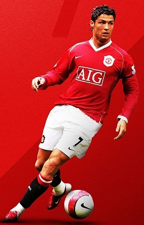

Cristiano Ronaldo
Biografia de Cristiano Ronaldo
Cristiano Ronaldo (1985) é um futebolista português que fez história no Real Madrid. Foi jogador do Manchester United, do Juventus, da Itália e da Seleção Portuguesa. Foi eleito o melhor jogador do mundo em 2008, 2013, 2014, 2016 e 2017. Recebeu cinco bolas de ouro em sua carreira. Atualmente é jogador do Al-Nassr, da Arábia Saudita.
Infância
Cristiano Ronaldo dos Santos Aveiro nasceu na cidade de Funchal, na Ilha da Madeira, Portugal, no dia 05 de fevereiro de 1985. Filho caçula do jardineiro José Diniz Pereira Aveiro e da cozinheira Maria Dolores dos Santos Aveiro, quando criança passava a maior parte de seu dia jogando bola na rua com os amigos.
Início de Carreira
Cristiano Ronaldo começou sua carreira aos 9 anos de idade quando estreou no Futebol Clube Andorinha, na Ilha da Madeira. Com grandes habilidades, logo despertou o interesse do maior clube da ilha, o Nacional, que o contratou em 1995.
Sporting Lisboa
No dia 14 de abril de 1997, Cristiano Ronaldo fez o teste no Sporting Lisboa e, com apenas 11 anos entrou para as categorias de base do clube, onde jogou no Sub 16, Sub 17 e no Sub 18.
No dia 13 de julho de 2002, Ronaldo entrou como titular na equipe principal do Sporting. Desse dia em diante disputou mais de 30 partidas com a equipe e marcou 5 gols.
Manchester United

Em 2003, Cristiano Ronaldo chamou a atenção do técnico do Manchester United, da Inglaterra. Foi contratado para substituir o jogador David Beckham, que havia sido contratado pelo Real Madrid, da Espanha.
Em 2011, Ronaldo chegou a marcar 53 gols, número nunca alcançado antes pelo clube durante uma temporada.
Juventus
No dia 10 de julho de 2018, foi anunciada a transferência de Cristiano Ronaldo para a Juventus. Sua estreia foi no dia 17 de agosto na série A do Campeonato Italiano, no jogo Juventus e Chievo, mas só no quarto jogo, contra o Sassuollo, que Cristiano Ronaldo marcou dois gols e garantiu a vitória por 2 a 1.
Em sua estreia pela Liga dos Campeões da UEFA na temporada de 2018-19, no jogo contra o Valencia, Ronaldo acabou expulso no primeiro tempo depois de desentendimentos com o colombiano Jeison Murillo.
No dia 16 de janeiro de 2019, Cristiano levantou a primeira taça com a camisa do Juventus, ao marcar o gol do título da Supercopa da Itália de 2018, frente ao Milan pelo placar de 1-0.